Birla Institute of Technology and Science, Pilani
CS F213 / MAC F212 — Object-Oriented Programming · Semester I, 2026-2027
Project Report
| Group number | [Group No.] |
| Members | [Member 1 — Name, ID] [Member 2 — Name, ID] [Member 3 — Name, ID] |
| Source code | [GitHub repository URL] |
| Technology | Java 17 · Spring Boot 3.3 · React 18 · PostgreSQL 16 · Docker |
| Submission date | November 2026 |
Modern organisations run on a portfolio of IT services — payment platforms, databases, VPN, identity providers, email, storage. When one of them fails, employees and customers must be able to report the problem, and the IT support team must identify, prioritise, assign, investigate, resolve and close it quickly and traceably. In a large organisation hundreds of such incidents arrive daily. Handling them by email or spreadsheets produces delayed responses, wrong prioritisation, uneven technician workload, missed service-level agreements (SLAs), duplicate tickets for the same outage, incomplete history and no way to spot recurring problems.
The task is to design and build an Intelligent IT Service Management & Incident Resolution System (I-ITSM): an integrated platform for incident reporting, classification, prioritisation, technician assignment, SLA monitoring, resolution, notification, auditing and reporting — designed with sound object-oriented principles so that it stays maintainable and extensible as the organisation's processes change.
| Stakeholder | Goal | Pain today |
|---|---|---|
| Employee / customer | Report a problem once, know its status, get it fixed, confirm the fix | No visibility; has to chase support by phone/email |
| Technician / support engineer | A clear, prioritised queue matching their skills; enough information to investigate | Overloaded, assigned unrelated tickets, missing details |
| Administrator / IT manager | Service health at a glance, SLA compliance, fair workload, configurable rules, audit evidence | No live picture, SLA breaches found after the fact, rules hard-coded in people's heads |
| Service owners / business | Mission-critical services get attention first | Priority decided ad hoc |
| Auditors / compliance | Complete, tamper-evident history of every incident | Fragmented email trails |
A full-stack web application: a Java 17 / Spring Boot backend exposing a secured REST + WebSocket API over a PostgreSQL database, and a React single-page frontend with role-specific views. The domain model is the heart of the system: an Incident aggregate whose lifecycle is enforced by the State pattern, strategies for priority and assignment that administrators can switch at runtime, and an event bus (Observer pattern) through which audit, notification and dashboard broadcasting react to every change without the core workflow knowing about them.
| Role | Capabilities |
|---|---|
| Employee / Customer | Register/login · report incidents (with live category suggestion and duplicate warning) · view and track own incidents · add information · respond to technician requests · view resolution · verify fix / reopen · give feedback · close verified incidents |
| Technician / Support Engineer | Login · view assigned queue and workload/capacity · acknowledge · start investigation · add investigation notes · request information · provide resolution · resolve · view related incidents and suggested resolutions · search all incidents |
| Administrator / IT Manager | Manage users and technicians (skills, capacity, availability, team lead) · manage IT services and categories · configure SLA policies · configure active priority and assignment strategies · assign/reassign/auto-assign, reclassify, override priority · monitor incidents on a live dashboard · reports · audit logs · notification log and email outbox · trigger SLA monitor |
| System (SLA monitor) | Background scheduler: re-evaluate SLA health, emit warnings/violations, escalate unacknowledged critical incidents |
| ID | Requirement | Implemented in |
|---|---|---|
| FR-01 | Users authenticate with username/password; passwords stored as BCrypt hashes; sessions are stateless JWTs | AuthService, JwtService, SecurityConfig |
| FR-02 | Employees self-register; admins create any role | AuthController, AdminService + UserFactory |
| FR-03 | Create an incident with title, description, affected service, impact, urgency, affected users, optional category | IncidentService.report |
| FR-04 | System classifies the incident (explicit category, else keyword-based suggestion, else OTHER) | CategorySuggestionService |
| FR-05 | System computes priority P1–P4 with a documented algorithm and stores score + rationale | PriorityStrategy implementations |
| FR-06 | System applies the SLA policy for the priority: response and resolution deadlines | SLAService, SLATracker |
| FR-07 | System detects likely duplicate open incidents on the same service and blocks/links them | DuplicateDetectionService |
| FR-08 | System assigns a technician using the active strategy; admin can run a named strategy or assign manually from a ranked recommendation list | AssignmentService, StrategyRegistry |
| FR-09 | Incident lifecycle NEW → CLASSIFIED → ASSIGNED → ACKNOWLEDGED → IN_PROGRESS ⇄ PENDING_INFO → RESOLVED → VERIFIED → CLOSED, with reopen; illegal transitions rejected | IncidentState / IncidentStates |
| FR-10 | Technician acknowledges (stamps SLA response), starts investigation, adds notes, requests information, resolves with summary and root cause | IncidentService |
| FR-11 | Reporter responds to information requests, verifies, reopens, gives 1–5 feedback, closes | IncidentService |
| FR-12 | Every important action is recorded (timestamp, actor, action, previous/new state, incident, description) | AuditObserver, AuditRecord |
| FR-13 | Relevant users are notified on created / assigned / priority changed / acknowledged / info requested / resolved / closed / SLA warning / SLA violated / escalated via ≥2 mechanisms (in-app, email, SMS) | NotificationObserver, channels |
| FR-14 | Background SLA monitoring: at-risk warnings (configurable % of window), violation detection, recording | SLAMonitor |
| FR-15 | Automatic escalation: unacknowledged P1/P2 → team lead → administrators | SLAMonitor.escalateIfNeeded |
| FR-16 | Search/filter by text or number, status, priority, category, service, technician, SLA status, date range (8 criteria), paged and sorted | IncidentSpecifications, IncidentController.search |
| FR-17 | Reports: overview counts, by status/priority, technician workload, service analysis, category analysis, MTTA, MTTR, SLA compliance %, average feedback | ReportService |
| FR-18 | Live dashboard updated over WebSocket on every event | DashboardBroadcastObserver, WebSocketConfig |
| FR-19 | Admin configures services, categories (with keywords), SLA policies, strategies, technician skills/capacity | AdminService |
| FR-20 | Suggested resolutions from similar resolved incidents on the same service | ResolutionSuggestionService |
| FR-21 | All data persists in PostgreSQL | Spring Data JPA repositories |
| Category | Requirement | How it is met |
|---|---|---|
| Security | Authentication, role-based authorisation, password protection, input validation, protection against unauthorised operations | JWT + BCrypt; URL-level role rules + @PreAuthorize + ownership checks; Bean Validation on every request DTO; entities never serialised directly |
| Maintainability | New category, strategy, notification channel or observer without touching unrelated code | Categories are data; strategies/channels/observers are interface implementations discovered by Spring |
| Extensibility | Lifecycle rules changeable in one place | State classes own transitions |
| Reliability | History never lost; one failing observer must not break others | Audit observer runs first; event bus isolates observer exceptions; transactional services |
| Performance | Lists paged; workload computed by count queries, not by loading incidents; DB indexes on status, priority, service, technician | JPA Specifications + Pageable; @Index annotations |
| Usability | Role-specific navigation; state-aware action buttons; live suggestions while typing | React UI driven by allowedActions from the API |
| Portability | Runs with one command anywhere | Docker Compose; H2 dev profile needs no database install |
| Testability | Core rules unit-testable without a database | Pure domain/strategy classes; 44 automated tests |
InvalidStateTransitionException (HTTP 409).I-ITSM follows a layered architecture (Choice 1 in the brief): a React SPA talks to a Spring Boot backend over JSON/REST and STOMP/WebSocket; the backend is split into security, web (controllers, DTOs, exception handler), application services, the domain model, intelligence services, an event bus with observers, and repositories over PostgreSQL. Cross-cutting concerns — audit, notification, live broadcasting — are observers, so the core workflow stays small.
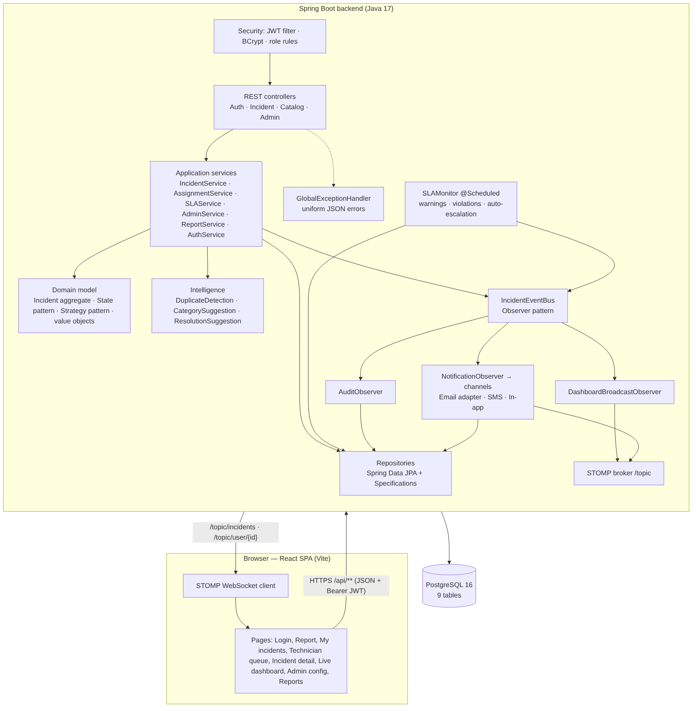
/api/incidents with a Bearer JWT. JwtAuthenticationFilter validates the token and sets the principal; URL rules allow any authenticated user.IncidentController.create validates the DTO (Bean Validation) and calls IncidentService.report inside a transaction.DuplicateDetectionService, constructs the Incident aggregate, persists it to obtain the number, classifies it (CategorySuggestionService), computes priority via the active PriorityStrategy, applies the SLA via SLAService, and optionally auto-assigns via AssignmentService.IncidentEvent on the IncidentEventBus; AuditObserver writes history, NotificationObserver composes messages (NotificationFactory) and dispatches them to the channels, DashboardBroadcastObserver pushes to /topic/incidents.IncidentDetail view inside the transaction and the controller returns 201.docker compose up --build starts three containers: db (postgres:16), backend (multi-stage Maven build → JRE image) and frontend (Vite build served by nginx, which reverse-proxies /api and /ws to the backend). Configuration is injected through environment variables (database URL/credentials, JWT secret, SLA monitor period, escalation minutes). For development without Docker, the dev Spring profile uses an in-memory H2 database in PostgreSQL compatibility mode.
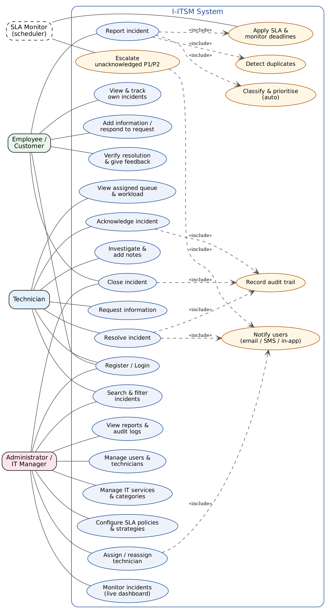
The class model is presented in four views so that each is readable: the domain model, the State pattern, the Strategy pattern, and the Observer/Factory/Adapter collaboration.
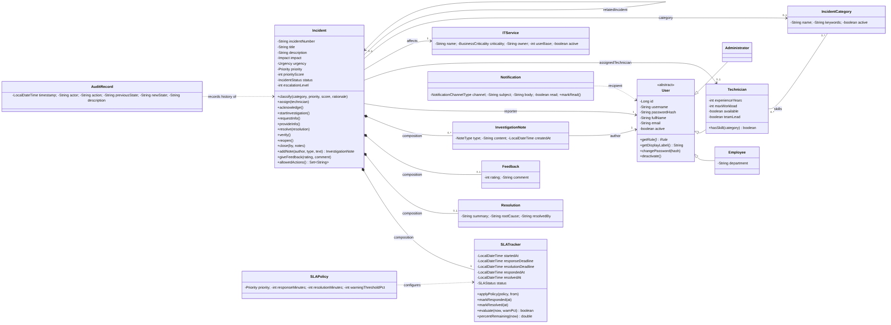
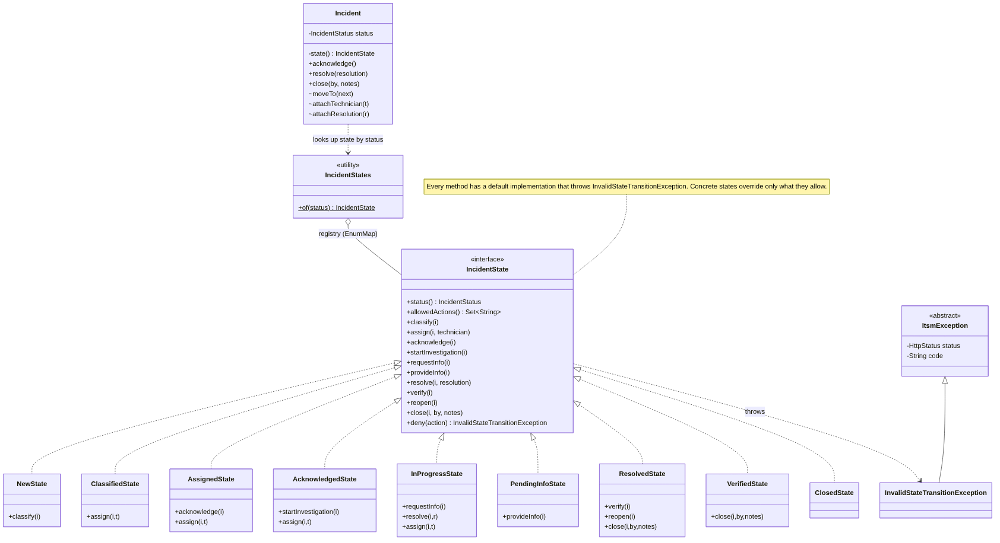
Incident delegates every lifecycle call to the IncidentState for its current status; defaults throw InvalidStateTransitionException.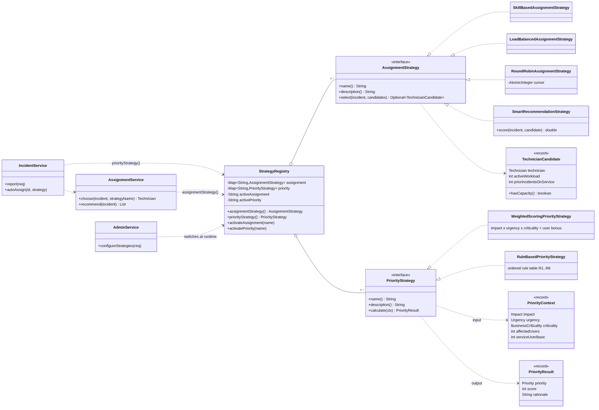
StrategyRegistry.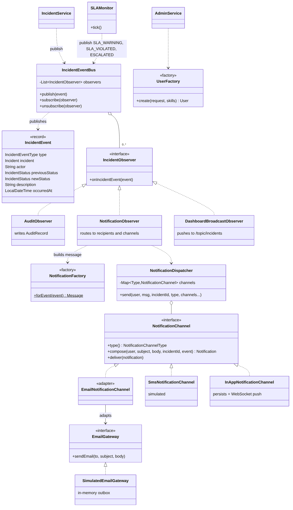
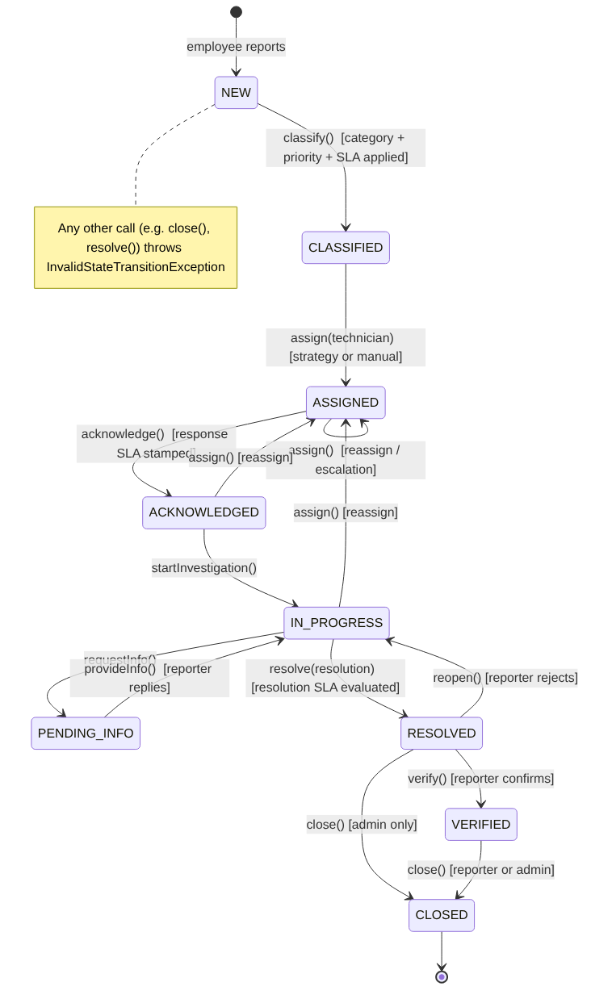
| Concept | Where and why |
|---|---|
| Encapsulation | All entity fields are private. Incident has no setStatus; the only way to change state is through behavioural methods (acknowledge(), resolve(...)) that delegate to the State pattern. Mutators used by the states (moveTo, attachTechnician) are package-private, so no other layer can bypass the rules. User.passwordHash is never exposed by the API — controllers return read-model records (Views.*), not entities. SLATracker hides all date arithmetic behind evaluate(), percentRemaining(), isViolated(). |
| Abstraction | Complex operations are modelled as abstractions with small contracts: PriorityStrategy.calculate(ctx), AssignmentStrategy.select(incident, candidates), NotificationChannel.compose/deliver, IncidentObserver.onIncidentEvent, EmailGateway.sendEmail. IncidentService orchestrates the workflow in domain language without knowing how priority is computed or how email is sent. |
| Inheritance | Used only for genuine is-a relationships: Employee, Technician, Administrator are users (they log in, have names, appear in audit records). JPA single-table inheritance with a discriminator. ItsmException is the abstract root of 10 business exceptions that all carry an HTTP status and error code. We deliberately did not use inheritance for incident categories (data, not types) or for notification channels (interface + composition instead). |
| Polymorphism | User.getRole() is abstract and implemented per subclass. Strategies, states, observers and channels are all called through their interface; IncidentEventBus.publish loops over IncidentObservers without knowing their concrete type. NotificationDispatcher holds a Map<NotificationChannelType, NotificationChannel> and calls deliver() polymorphically. |
| Interfaces | IncidentState, PriorityStrategy, AssignmentStrategy, IncidentObserver, NotificationChannel, EmailGateway, and the Spring Data repository interfaces. IncidentState uses Java default methods so each concrete state overrides only what it permits. |
| Composition | Incident is composed of an SLATracker, a Resolution, a Feedback (JPA @Embeddable value objects with no identity) and owns its InvestigationNotes (cascade = ALL, orphanRemoval = true). IncidentService is composed from repositories, strategies, SLA, assignment, intelligence and the bus. StrategyRegistry aggregates strategies; NotificationDispatcher aggregates channels. |
| Association / Aggregation | Associations: Incident → reporter (User), → assigned Technician, → ITService, → IncidentCategory, → related Incident (self-association); InvestigationNote → author. Aggregation: Technician ↔ IncidentCategory skills (many-to-many; categories exist independently); IncidentEventBus ◇ observers. |
| Exception handling | Custom hierarchy under ItsmException (invalid state transition, not found, technician unavailable, workload exceeded, missing SLA configuration, unauthorised operation, duplicate incident, invalid incident, invalid credentials, conflict). GlobalExceptionHandler maps them and framework exceptions (validation, JSON parse, access denied, database) to a uniform JSON error body. Value objects validate in constructors (Feedback rating 1–5, SLAPolicy positive targets). |
| Collections / data structures | EnumMap<IncidentStatus, IncidentState> for the state registry (O(1), type-safe); LinkedHashMap for strategy registries (stable display order); CopyOnWriteArrayList for observers (safe iteration while subscribing); Set<IncidentCategory> for skills (no duplicates); HashSet token sets and Jaccard for similarity; Optional for "no technician found"; AtomicInteger cursor in round-robin; Java records for immutable value carriers (PriorityContext, PriorityResult, TechnicianCandidate, IncidentEvent, DTOs); Page/Pageable for lists. |
| Pattern | Participants | Why it was chosen |
|---|---|---|
| State | IncidentState (interface), nine concrete states in IncidentStates, Incident (context) | The brief requires that inappropriate transitions (e.g. NEW → CLOSED) be prevented. Instead of a growing switch inside every method, each state class declares what it allows; everything else fails by default. Adding a state (e.g. ON_HOLD) means one new class and one enum constant. |
| Strategy | PriorityStrategy → Weighted scoring, Rule based; AssignmentStrategy → Skill based, Load balanced, Round robin, Smart recommendation; StrategyRegistry | The brief requires ≥2 assignment strategies and that they be changeable "without redesigning the application". Administrators switch the active strategy from the UI (PUT /api/admin/strategies); the service code never changes. Strategies are pure functions and have 19 unit tests. |
| Observer | IncidentEventBus (subject), IncidentObserver, AuditObserver, NotificationObserver, DashboardBroadcastObserver | Audit, notification and live dashboard all react to the same events but must not couple the workflow to them. New reactions (e.g. a Slack poster, metrics) are added by implementing one interface; Spring injects all observers into the bus. Observers are isolated so a failing one cannot block the others. |
| Factory | NotificationFactory.forEvent(event); UserFactory.create(request, skills) | Centralises the wording of every notification so that all channels say the same thing, and hides the constructor differences between Employee, Technician and Administrator from the admin service. |
| Repository | Spring Data JPA interfaces (IncidentRepository …) + IncidentSpecifications | Services work with collection-like interfaces; no SQL in business code. The Specification helpers compose the eight search filters. |
| Adapter | EmailNotificationChannel adapts EmailGateway (SimulatedEmailGateway today; SMTP/SendGrid tomorrow) to the NotificationChannel contract | The brief lists Adapter for external notification services; switching from the simulated outbox to a real provider is a one-bean change. |
| Layer | Technology | Purpose |
|---|---|---|
| Language | Java 17 (LTS) | Backend and domain model; records, sealed-style switch expressions, text blocks |
| Backend framework | Spring Boot 3.3.5 — Web, Data JPA (Hibernate 6.5), Security 6, WebSocket (STOMP), Validation, Scheduling | REST API, persistence, authentication/authorisation, real-time push, background SLA monitor |
| Auth | JJWT 0.12 (HS256), BCrypt | Stateless tokens, password hashing |
| Database | PostgreSQL 16; H2 2.x in PostgreSQL mode for dev/tests | Durable relational store; zero-setup development |
| Frontend | React 18, Vite 5, React Router 6, @stomp/stompjs 7, hand-written CSS | Role-based SPA with live dashboard |
| Build / run | Maven 3.9, npm, Docker & Docker Compose, nginx | Reproducible builds and one-command deployment |
| Testing | JUnit 5, Spring Boot Test, MockMvc, Hamcrest, JUnit Params | Unit + integration tests (44 tests) |
| Documentation | Mermaid, Graphviz | UML/ER/architecture diagrams |
The project is an OOP course project and Java is the language in which the course's object-oriented concepts are taught: abstract classes, interfaces with default methods, packages for encapsulation, strong static typing for polymorphism, checked design of exceptions. Java 17 adds records (used for immutable value objects and DTOs) and switch expressions (used in the notification factory). The mature ecosystem (Spring, Hibernate, JUnit) means the OOP design — not plumbing — is where our effort went. Java is also the dominant language for enterprise ITSM products, so the design is industry-realistic.
Three roles need three different experiences with many state-dependent controls (buttons appear according to allowedActions returned by the API). React's component model and hooks make this declarative; the live dashboard and notification bell need a persistent WebSocket connection that is natural in a single-page application. Vite gives sub-second rebuilds and a trivial production build. We avoided heavy UI frameworks to keep the frontend readable and under 1,500 lines.
Spring Boot provides, out of the box, everything the brief asks for: REST controllers with validation, a security filter chain with role-based rules and method security, JPA repositories (Repository pattern), @Scheduled background processing for SLA monitoring, STOMP WebSocket broker for the real-time dashboard, and dependency injection that discovers every IncidentObserver, NotificationChannel and strategy automatically — which is exactly what makes the Observer and Strategy patterns pluggable. Its layered conventions map directly onto the architecture in the brief.
Incident data is strongly relational (incident → reporter, technician, service, category; notes; audit; many-to-many skills) and needs ACID guarantees — an SLA violation record must never be lost and workload counts must be consistent. PostgreSQL is open source, widely deployed in enterprises, supports the indexes and constraints we rely on, and runs in a 40 MB container. H2 in PostgreSQL mode gives identical SQL semantics for tests and for running without an install.
A single deployable with clear layers is the right size for a 3-person team and a semester: it is easy to run, debug and demo, and the layering (web → service → domain → repository) keeps OOP concerns visible. Inside, the event bus gives us the decoupling benefits of an event-driven design (audit, notifications and the dashboard are independent subscribers) without the operational cost of a message broker. Microservices would have added network boundaries and distributed-transaction problems for no benefit at this scale.
| Alternative | Why not (for this project) |
|---|---|
| Python / FastAPI or Django | Faster to prototype, but duck typing makes interfaces, abstract classes and polymorphism less explicit — harder to demonstrate and defend OOP design. |
| Node.js / TypeScript backend | One language front and back; TypeScript has classes and interfaces, but structural typing and the npm ecosystem's patterns are less aligned with classic OOP and with the course. |
| Thymeleaf server-rendered UI | Simpler stack, but a real-time dashboard and state-aware forms would need ad-hoc JavaScript anyway. |
| MongoDB | Flexible schema, but our data is relational and we need joins (workload, service analysis) and referential integrity. |
| MySQL | Equivalent fit; PostgreSQL chosen for stricter standards compliance and better JSON/indexing options for future work. |
| Microservices / serverless | Over-engineering for the scale; harder to demo and test. |
| Spring Application Events instead of our own bus | Equivalent mechanism; we implemented IncidentEventBus explicitly so the Observer pattern is visible and unit-testable, and noted that Spring events are the same pattern. |
Advantages: strong typing and compile-time checking; very large ecosystem; stateless JWT API scales horizontally; Spring's DI makes the patterns pluggable; PostgreSQL's constraints protect data; Docker gives a reproducible demo; automated tests run in under 15 s.
Limitations: JVM start-up (~6 s) and memory footprint are higher than Go/Node; Spring's "magic" (proxies, lazy loading) has a learning curve — we hit a LazyInitializationException and fixed it by mapping to DTOs inside the transaction; Hibernate ddl-auto=update is convenient for development but a migration tool (Flyway) would be needed in production; the frontend has no automated tests.
Java gives us the full vocabulary: abstract classes (User, ItsmException), interfaces with default methods (IncidentState), package-private access to protect the aggregate's mutators, enums with behaviour (Priority.isMoreSevereThan, IncidentStatus.isOpen), records for immutable values, generics (Optional<TechnicianCandidate>, Specification<Incident>). JPA maps inheritance (@Inheritance), composition (@Embedded, cascade/orphanRemoval) and associations (@ManyToOne, @ManyToMany) directly onto the object model, so the class diagram and the ER diagram are two views of the same design. Spring's dependency injection realises "program to an interface": every collaborator is injected by its interface type, and collections of implementations (List<IncidentObserver>, List<NotificationChannel>) are assembled automatically.
IncidentEvents to Kafka so audit, notification and analytics become separate consumers (the Observer interface stays the same); index and partition audit_records and notifications by time; move search to Elasticsearch/OpenSearch and compute duplicate similarity with TF-IDF/embeddings there.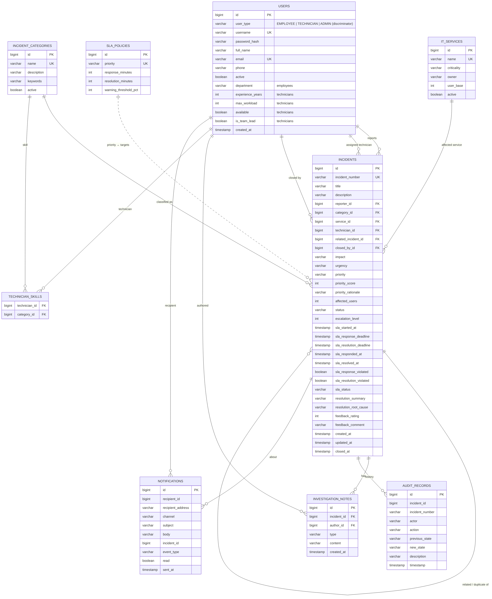
| Table | Purpose | Key columns / constraints |
|---|---|---|
users | All actors (single-table inheritance) | user_type discriminator; unique username, email; technician-only columns nullable for other types |
incident_categories | Admin-editable categories with auto-classification keywords | unique name |
technician_skills | Many-to-many Technician ↔ Category | composite PK (technician_id, category_id), FKs to users and categories |
it_services | Service catalogue with business criticality and user base | unique name |
sla_policies | Response/resolution targets per priority | unique priority |
incidents | The aggregate root; embeds SLA tracker, resolution and feedback columns | unique incident_number; FKs reporter_id, technician_id, closed_by_id → users, service_id, category_id, self-FK related_incident_id; indexes on status, priority, service, technician |
investigation_notes | Conversation / investigation log (composition — deleted with the incident) | FK incident_id (not null), author_id |
audit_records | Immutable history; intentionally not an FK so history survives even if an incident is purged | index on incident_id |
notifications | Every delivered message, per channel | index on recipient_id |
The full DDL as generated against PostgreSQL 16 is in docs/database/schema.sql; sample reference data is in docs/database/sample_data.sql and is also inserted automatically on first start by DataSeeder.
| Services (criticality, user base) | Categories | SLA policies (response / resolution) |
|---|---|---|
| Payment Application (MISSION_CRITICAL, 5000) · Customer Database (MISSION_CRITICAL, 800) · Single Sign-On (MISSION_CRITICAL, 3200) · Corporate Email (HIGH, 3000) · VPN (HIGH, 1500) · HR Portal (MEDIUM) · Cloud Storage (MEDIUM) · Office Wi-Fi (MEDIUM) · Printing (LOW) · Intranet (LOW) | HARDWARE, SOFTWARE, NETWORK, DATABASE, CLOUD, SECURITY, AUTHENTICATION, APPLICATION, STORAGE, EMAIL, OTHER — each with keyword lists (e.g. AUTHENTICATION: login, password, sso, otp, mfa, locked…) | P1: 5 min / 30 min · P2: 15 min / 2 h · P3: 1 h / 8 h · P4: 4 h / 24 h · warning at 25 % remaining |
Demo accounts (password password123): admin; technicians tech.arjun (team lead; APPLICATION, DATABASE, CLOUD; 8 yrs), tech.priya (NETWORK, SECURITY, AUTHENTICATION; 5 yrs), tech.rahul (HARDWARE, SOFTWARE, EMAIL, OTHER; 2 yrs), tech.sneha (STORAGE, CLOUD, DATABASE, APPLICATION; 4 yrs); employees emp.raj (Finance), emp.meera (Sales).
Weighted scoring (default). Each dimension has a weight 1–4 (LOW, MEDIUM, HIGH, CRITICAL / MISSION_CRITICAL):
base = impact × urgency × businessCriticality (1 … 64) bonus = +8 if affectedUsers ≥ 100, +4 if ≥ 25, else 0 score = base + bonus (1 … 72) P1 if score ≥ 36 P2 if ≥ 18 P3 if ≥ 8 else P4
Multiplication (rather than addition) makes a single CRITICAL dimension dominate, which matches how ITIL impact/urgency matrices behave: a critical impact on a mission-critical service cannot be "averaged away" by low urgency. The affected-user bonus lets a widespread low-impact problem climb one band. Example from the demo: Payment Application down, impact CRITICAL(4) × urgency HIGH(3) × MISSION_CRITICAL(4) = 48, +8 for 400 users → 56 → P1. The full rationale string is stored on the incident and shown in the UI.
Rule-based (alternative). An ordered rule table where the first match wins: R1 mission-critical service with high impact or urgency → P1; R2 critical impact or urgency → P1; R3 high impact and ≥ medium urgency → P2; R4 ≥ 50 affected users → P2; R5 medium impact or urgency → P3; R6 default → P4. It is easier for a manager to reason about and audit; the administrator can switch between the two at runtime.
All strategies operate on a candidate list built by AssignmentService: every active technician with their live active workload (count query) and the number of incidents they have previously handled on the affected service. All strategies exclude unavailable technicians and those at capacity.
| Strategy | Rule |
|---|---|
| SKILL_BASED | Must have the incident's category as a skill; least loaded wins, ties → most experienced |
| LOAD_BALANCED | Least loaded available technician; skill match only breaks ties |
| ROUND_ROBIN | Rotates through eligible technicians in id order (thread-safe counter) |
| SMART_RECOMMENDATION (default; intelligent feature D) | score = 40·skillMatch + 25·(1 − workload/max) + 2·min(experience, 10) + 3·min(priorService, 5) + 10·(teamLead ∧ P1/P2); highest wins. Unskilled technicians remain eligible with a penalty so a P1 is never left unassigned. |
If no candidate qualifies, TechnicianUnavailableException (HTTP 409) is raised; on creation the incident stays CLASSIFIED and an audit note records the deferred assignment for the administrator.
On classification the SLATracker computes responseDeadline = createdAt + responseMinutes and resolutionDeadline = createdAt + resolutionMinutes from the policy of the priority. Acknowledgement stamps respondedAt; resolving stamps resolvedAt; each is compared with its deadline to set the violated flags. The background SLAMonitor (every 30 s by default) re-evaluates every open incident: if the response deadline passed without acknowledgement or the resolution deadline passed → VIOLATED (event SLA_VIOLATED, once); else if the remaining percentage of the resolution window ≤ the policy's warning threshold → AT_RISK (event SLA_WARNING, once — intelligent feature E, SLA risk detection). A priority change restarts the clock.
In the same sweep, a P1/P2 incident that is still CLASSIFIED or ASSIGNED after escalationMinutes × (level + 1) is escalated: level 1 reassigns it to an available team lead (if one exists and the incident is ASSIGNED) and notifies them; level 2 and above alert all administrators. Every escalation increments escalationLevel, is audited and broadcast to the dashboard. The chain is Technician → Team lead → Administrators, as in the brief.
When an incident is submitted (and live, while the reporter types), the system looks at open incidents on the same service created within the last 48 hours. Text is tokenised (lower-case, non-alphanumerics removed, stop words such as "cannot", "unable", "issue" dropped, light suffix stemming so failing/failed/fails collide) and compared with Jaccard similarity |A∩B| / |A∪B|. Similarity ≥ 0.25 → likely duplicate: the API returns 409 with the candidate numbers; the UI shows them and offers "submit anyway", which links the new incident to the original (related_incident_id) and raises a DUPLICATE_DETECTED event for administrators. All same-service matches are shown as "related" on the incident page (correlation).
Each category carries an admin-editable keyword list. The title and description are scanned; a keyword hit in the title scores 2, in the description 1. Scores are normalised to confidences and the top three are suggested live in the form; if the reporter leaves the category blank the best match is applied, otherwise OTHER. Administrators improve the classifier simply by editing keywords — no code change.
For an open incident, the 50 most recent resolved incidents on the same service are compared with the same similarity measure; those above 0.1 are shown to the technician with their resolution summary and root cause, ranked by similarity.
| Requirement | Implementation |
|---|---|
| Authentication | POST /api/auth/login verifies the BCrypt hash and issues an HS256 JWT (8 h) carrying username, role and user id. JwtAuthenticationFilter validates the signature and expiry on every request; invalid tokens → 401. |
| Role-based authorisation | Three layers: (1) URL rules — /api/admin/** requires ADMIN, /api/technician/** TECHNICIAN or ADMIN, everything else authenticated; (2) @PreAuthorize("hasRole('ADMIN')") on AdminService; (3) ownership checks in IncidentService — employees see and act only on their own incidents, technicians act only on incidents assigned to them, reporters alone verify/reopen/feedback. Violations raise UnauthorizedOperationException → 403. |
| Password protection | BCrypt (adaptive, salted); hashes never leave the server; minimum length 8 enforced at registration. |
| Input validation | Bean Validation on all DTOs (@NotBlank, @Size, @Min/@Max, @Email, @Pattern for usernames); domain constructors re-validate invariants; JPA parameter binding prevents SQL injection; page size capped at 100. |
| Secure API access | Stateless, CSRF not applicable to bearer tokens; CORS configured; secret and DB credentials come from environment variables; entities are never serialised (no password hash or lazy proxies in responses). |
| Documented but not implemented | HTTPS termination (nginx/ingress), refresh tokens and logout blacklist, rate limiting on login, account lockout after failed attempts, audit of admin configuration changes, secrets manager, WebSocket topic authorisation (currently topics are readable by any connected client — acceptable for a demo, to be secured with a channel interceptor in production). |
| Situation (from the brief) | Exception / handling | HTTP |
|---|---|---|
| Invalid login | InvalidCredentialsException | 401 |
| Unauthorised operation | UnauthorizedOperationException; Spring AccessDeniedException | 403 |
| Invalid incident | InvalidIncidentException (retired service), IllegalArgumentException from constructors | 400 |
| Invalid state transition | InvalidStateTransitionException thrown by the State pattern | 409 |
| Technician unavailable | TechnicianUnavailableException | 409 |
| Technician workload exceeded | WorkloadExceededException (manual assignment); strategies skip full technicians | 409 |
| Service / user / incident not found | ResourceNotFoundException | 404 |
| Missing SLA configuration | MissingSlaConfigurationException | 422 |
| Duplicate incident | DuplicateIncidentException with candidate list | 409 |
| Database failure | Spring DataAccessException caught centrally, logged, generic message returned; transactions rolled back | 503 |
| Network failure | Frontend ApiError wrapper surfaces failures in an alert; WebSocket client auto-reconnects every 3 s | — |
| Invalid user input | MethodArgumentNotValidException → field-level messages; malformed JSON → 400 | 400 |
| Anything else | Logged with stack trace; client receives a generic 500 without internals | 500 |
All errors share one JSON shape — { timestamp, status, code, message, fields?, candidates? } — so the frontend handles them uniformly.
44 automated tests (33 documented cases, several parameterised) run with mvn test in about 12 seconds: pure unit tests for the domain and strategies (no Spring, no database) and integration tests through the real HTTP stack (security filter, controllers, services, H2 database, observers) using the seeded accounts. All pass.
| ID | Category | Test case | Expected result | Status |
|---|---|---|---|---|
| TC-01 | Normal | Full lifecycle NEW→CLASSIFIED→ASSIGNED→ACKNOWLEDGED→IN_PROGRESS→RESOLVED→VERIFIED→CLOSED | Each transition succeeds; SLA response stamped on acknowledge; closed incident allows no actions | Pass |
| TC-02 | Business rule | Close an incident in NEW | InvalidStateTransitionException; state unchanged | Pass |
| TC-03 | Business rule | Resolve while ASSIGNED (not yet acknowledged) | Rejected | Pass |
| TC-04 | Business rule | Assign an unclassified (NEW) incident | Rejected | Pass |
| TC-05 | Normal | Request info → PENDING_INFO; resolve while pending; provide info → IN_PROGRESS | Pending blocks resolve; reply returns to IN_PROGRESS | Pass |
| TC-06 | Boundary | Reopen a RESOLVED incident | Back to IN_PROGRESS; resolvedAt cleared | Pass |
| TC-07 | Invalid input | Feedback before resolution; rating 0 and 6; rating 4 after resolution | First three rejected; last stored | Pass |
| TC-08 | Invalid input | Incident with blank title/description, null reporter/service, negative affected users | Exceptions; negative count clamps to 0 | Pass |
| TC-09 | Normal | SLA deadlines from policy P1 (5/30 min) | responseDeadline = t0+5, resolutionDeadline = t0+30, ON_TRACK | Pass |
| TC-10 | Boundary | Warning threshold 25 %: evaluate at 66 % and at 23 % remaining | ON_TRACK, then AT_RISK | Pass |
| TC-11 | Exception | No acknowledgement 6 min after creation (P1) | VIOLATED, responseViolated = true | Pass |
| TC-12 | Boundary | Resolve exactly at deadline vs 1 s late | MET vs VIOLATED | Pass |
| TC-13 | Invalid input | SLA policy with 0 / negative minutes, threshold 100 % | IllegalArgumentException | Pass |
| TC-14 | Business rule (7 cases) | Weighted scoring at band boundaries 36/18/8 and user bonus | P1, P1, P2, P3, P4, P3 (bonus), P3; rationale contains result | Pass |
| TC-15 | Business rule (6 cases) | Rule-based R1–R6 incl. 50 vs 49 users | Correct band per rule | Pass |
| TC-16 | Normal | Both priority strategies through the common interface | Interchangeable; same P1 on an all-critical context | Pass |
| TC-17 | Normal | Skill-based selection with busy/free/unskilled/unavailable/full candidates | Least-loaded skilled technician | Pass |
| TC-18 | Normal | Load-balanced selection | Least-loaded available technician even without skill | Pass |
| TC-19 | Exception | All four strategies with only unavailable/full candidates | Empty result (service raises TechnicianUnavailableException) | Pass |
| TC-20 | Normal | Round-robin over three eligible technicians, four calls | A, B, C, A (wraps) | Pass |
| TC-21 | Business rule | Smart recommendation scores (66 / 78 / 27) and winner | Formula verified; busy-but-experienced-and-familiar technician wins | Pass |
| TC-22 | Normal | Tokeniser: stop words removed, stemming collides failing/failed/fails | As specified | Pass |
| TC-23 | Boundary | Jaccard on similar, unrelated, identical and empty inputs | ≥ 0.25, 0, 1, 0 | Pass |
| TC-24 | Authorization | Wrong password; request without token | 401 INVALID_CREDENTIALS; 401 | Pass |
| TC-25 | Authorization | Employee calls /api/admin/reports/overview | 403 | Pass |
| TC-26 | Invalid input | Create incident with blank title, no description/impact/urgency | 400 VALIDATION_FAILED with field messages | Pass |
| TC-27 | Normal (integration) | Report "Payment application unavailable" with auto-assign | 201; INC number; APPLICATION; P1; ASSIGNED to Arjun; SLA ON_TRACK with deadline; audit has CREATED, CLASSIFIED, ASSIGNED | Pass |
| TC-28 | Intelligent | Similar report on same service; then with forceCreate | 409 DUPLICATE_INCIDENT with candidates; then 201 linked to original | Pass |
| TC-29 | Authorization | Employee and a different technician try to acknowledge | 403 UNAUTHORIZED_OPERATION | Pass |
| TC-30 | Exception | Resolve over HTTP before acknowledging | 409 INVALID_STATE_TRANSITION | Pass |
| TC-31 | Normal (integration) | Acknowledge → start → request info → reporter replies → resolve → verify → feedback → close; check notifications | Statuses as expected; SLA MET; EMAIL and IN_APP notifications incl. "resolved" | Pass |
| TC-32 | Normal | Search by status, priority+text, unknown service; admin overview and performance | Counts correct; average feedback 5.0 | Pass |
| TC-33 | Exception | Unknown incident id; assign to unknown technician; switch strategy; unknown strategy | 404; 404; 200 and active = LOAD_BALANCED; 404 | Pass |
Manual / exploratory tests performed: end-to-end smoke script over HTTP against both H2 and PostgreSQL (full lifecycle, duplicate, authorisation, strategy switching); SLA warning → violation → automatic escalation to the team lead with a 1 min / 2 min policy; live dashboard receiving events over WebSocket from a second browser session; all UI pages exercised with a Playwright script (screenshots in §11).
$ mvn test Tests run: 44, Failures: 0, Errors: 0, Skipped: 0 — BUILD SUCCESS
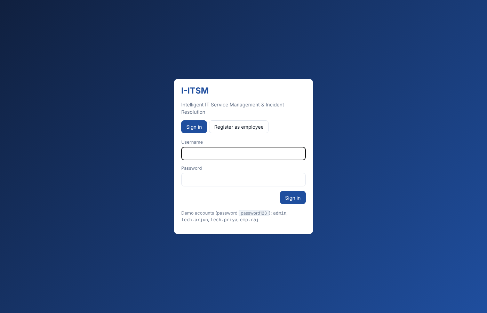
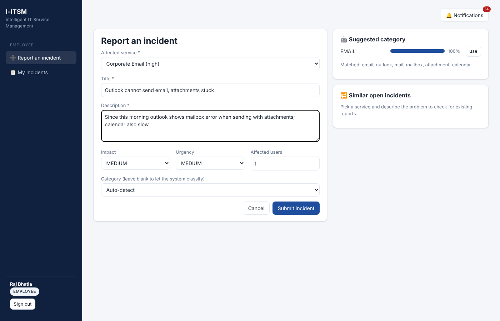
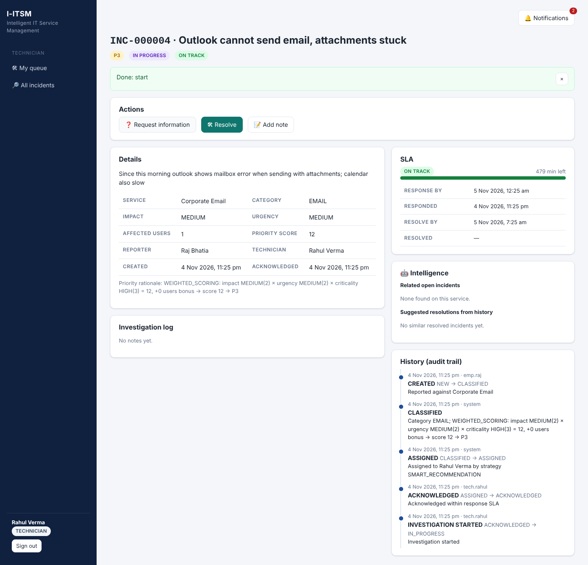
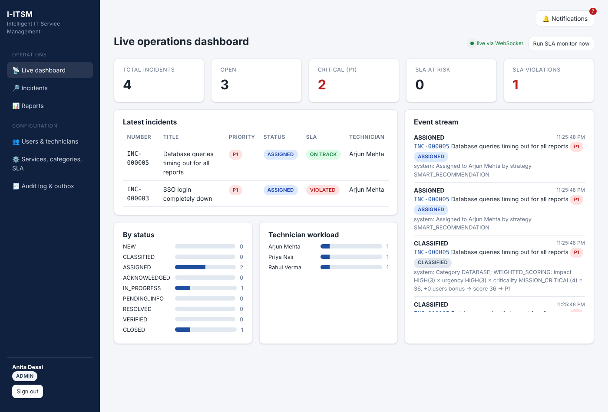
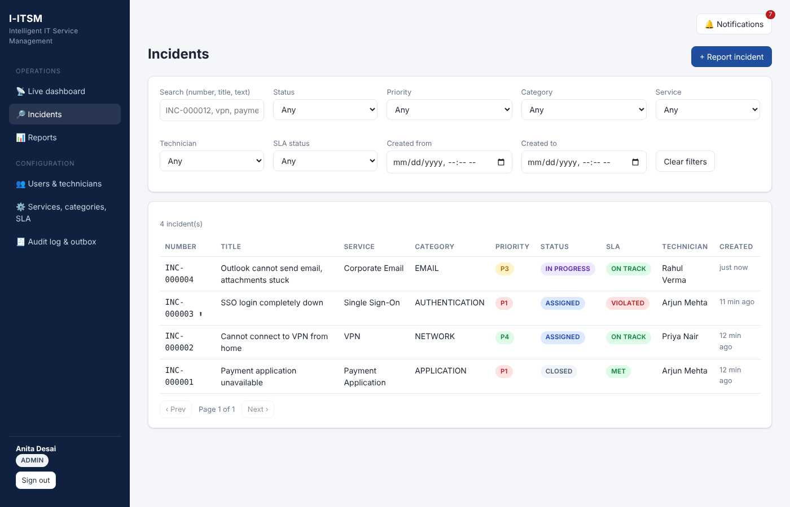
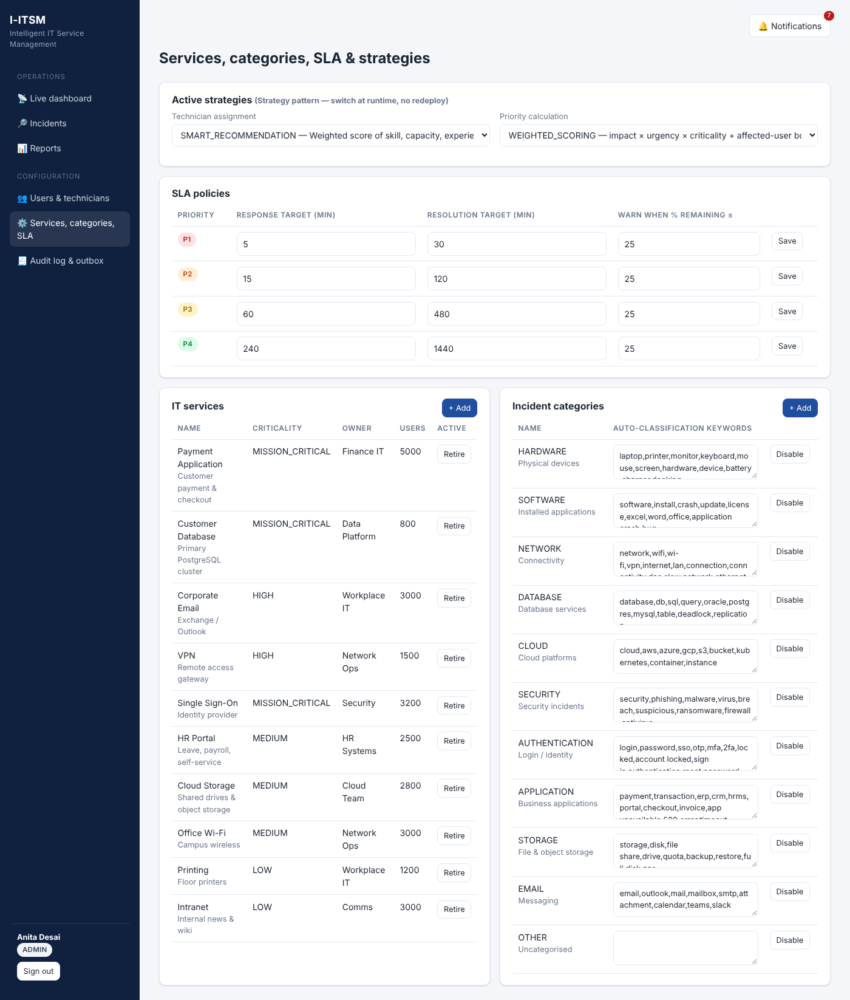
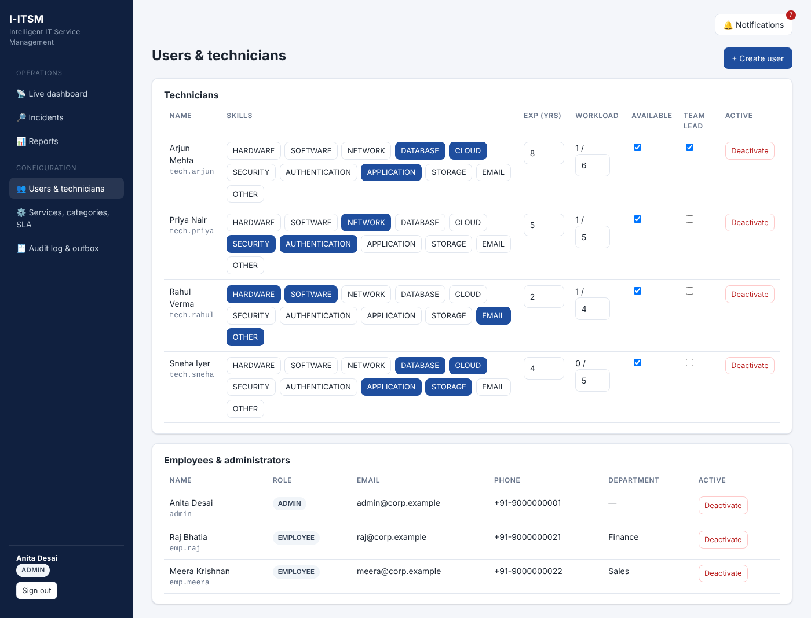
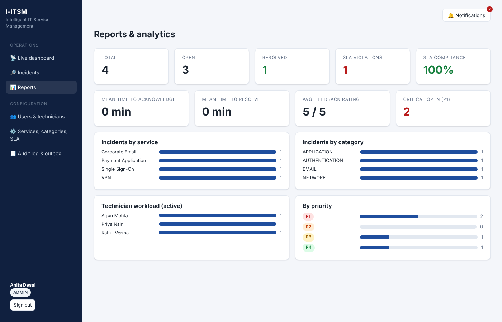
| Member | Primary responsibility | Deliverables owned |
|---|---|---|
| [Member 1 — Name, ID] | Domain model & OOP design | User hierarchy, Incident aggregate, State pattern, Strategy pattern (priority & assignment), custom exceptions, domain unit tests (TC-01–TC-21), class diagrams, §5 and §8 of this report |
| [Member 2 — Name, ID] | Backend services, API & persistence | Spring Boot services, REST controllers, JWT security, Observer event bus and notification channels, SLA monitor & escalation, intelligent features, PostgreSQL schema, integration tests (TC-24–TC-33), Docker Compose, §3, §6, §7, §9 |
| [Member 3 — Name, ID] | Frontend, UX, testing & documentation | React application (all pages), WebSocket live dashboard, UI testing with Playwright, use-case/ER/state diagrams, problem analysis and requirements (§1, §2), test documentation (§10), demo video editing and submission |
Every member can explain the whole system: the demo video is split so that each member presents one complete workflow end to end, and code reviews were done across areas.
CategorySuggestionService / ResolutionSuggestionService interfaces.# Docker (Postgres + backend + frontend) docker compose up --build # http://localhost:5173 # Without Docker, no DB install (H2 in memory) cd backend && mvn spring-boot:run -Dspring-boot.run.profiles=dev cd frontend && npm install && npm run dev # Tests cd backend && mvn test
| Method & path | Role | Purpose |
|---|---|---|
| POST /api/auth/register · /login · GET /api/auth/me | public / any | Register employee, login (JWT), current user |
| POST /api/incidents | Employee, Admin | Report (classify, prioritise, SLA, duplicate check, optional auto-assign) |
| POST /api/incidents/analyze | any | Live category suggestions + similar incidents for the form |
| GET /api/incidents?q&status&priority&categoryId&serviceId&technicianId&slaStatus&from&to&page&size&sort | any (scoped by role) | Search & filter |
| GET /api/incidents/{id} · /history · /similar · /recommendations · /suggested-resolutions · /mine · /queue | any (ownership enforced) | Detail, audit trail, intelligence, my lists |
| PUT /api/incidents/{id} | reporter, Admin | Update details (priority re-evaluated) |
| POST /api/incidents/{id}/classify · /assign · /auto-assign | Admin (classify also Technician) | Re-classify / override priority; manual or strategy assignment |
| POST /api/incidents/{id}/acknowledge · /start · /notes · /request-info · /resolve | assigned Technician, Admin | Investigation workflow |
| POST /api/incidents/{id}/provide-info · /verify · /reopen · /close · /feedback | reporter, Admin | Reporter workflow |
| GET /api/services · /categories · /technicians · /sla-policies · /strategies · /notifications | any | Reference data, own notifications |
| /api/admin/users · /technicians/{id} · /services · /categories · /sla-policies · /strategies | Admin | Configuration |
| GET /api/admin/reports/overview · /workload · /services · /categories · /performance · /audit · /notifications · /email-outbox; POST /api/admin/sla/run-monitor | Admin | Reports, logs, on-demand SLA sweep |
| WebSocket /ws (STOMP) → /topic/incidents, /topic/user/{id} | any | Live dashboard and in-app push |
backend/src/main/java/edu/bits/itsm/
domain/{user,incident,service,sla,audit,notification,strategy/{priority,assignment}}
event/ (IncidentEventBus, IncidentEvent, observers/) notification/ intelligence/
service/ web/ (controllers, dto/, GlobalExceptionHandler) security/ config/ exception/
backend/src/test/java/edu/bits/itsm/{domain,strategy,intelligence,api}
frontend/src/{pages,components,lib}
docs/{report,diagrams,database,demo}
docker-compose.yml · backend/Dockerfile · frontend/Dockerfile